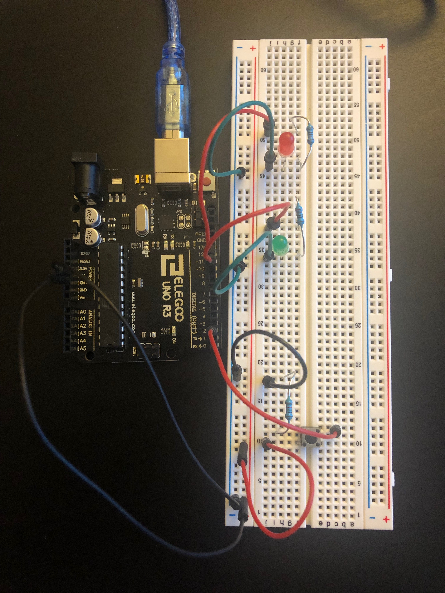

Assignment 2: Lights that Fade!
Sahana Vishwanath
This page shows all the documentation for assignment 2.
The following picture shows the schematic for this assignment:

caption
The following picture shows the circuit for this assignment:

caption
The following code shows the firmware for this assignment:
// sets the number of the pushbutton pin
const int buttonPin = 2;
// sets how many points to fade the LED by
int fadeAmount = 5;
// sets variable for reading the pushbutton status
int buttonState = 0;
void setup() {
// initializes the 10 pin as an output for the green LED light
pinMode(10, OUTPUT);
// initializes the 11 pin as an output for the red LED light
pinMode(11, OUTPUT);
// initializes the pushbutton pin as an input
pinMode(buttonPin, INPUT);
}
// the loop function runs over and over again forever
void loop() {
// reads the state of the pushbutton value
buttonState = digitalRead(buttonPin);
// checks if the pushbutton is pressed, and if it is, the following code runs
if (buttonState == HIGH) {
// starts a for loop to loop through the two pins (10, 11)
for (int thisPin = 10; thisPin < 12; thisPin++) {
// starts a for loop to loop through the brightness level for the LED lights
for (int brightness = 0; brightness < 256; brightness = brightness + fadeAmount){
// sets the brightness of the current pin to the brightness variable
analogWrite(thisPin, brightness);
// increases the brightness variable by the fadeAmount (5)
brightness = brightness + fadeAmount;
// waits for 1/20 of a second
delay(50);
}
}
}
// if the button is not pressed the following code runs
else {
// turns both the LED lights off
digitalWrite(10, LOW);
digitalWrite(11, LOW);
}
}
The comments in the above code describe each line of in the above code in detail. The code initializes various variables as well as sets certain output and input pins. The code then runs through two for loops to display two fading lights.
The following gif shows the operation of the circuit for this assignment:

The gif above shows how the circuit operates. Once the button is pressed, the green light turns on and slowly fades until it is off, then the red light turns on and slowly fades off.